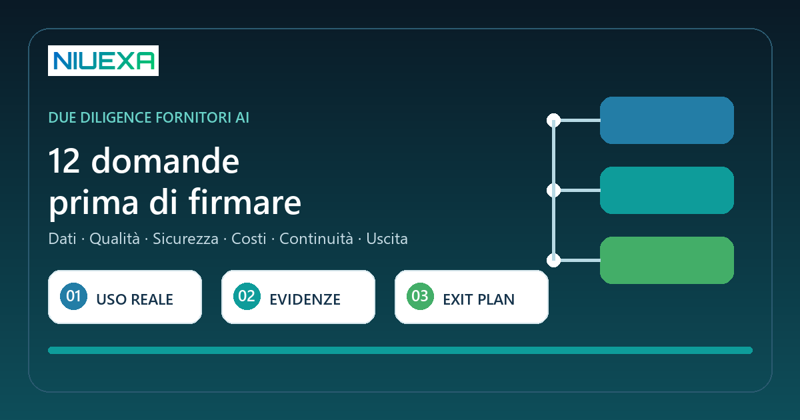
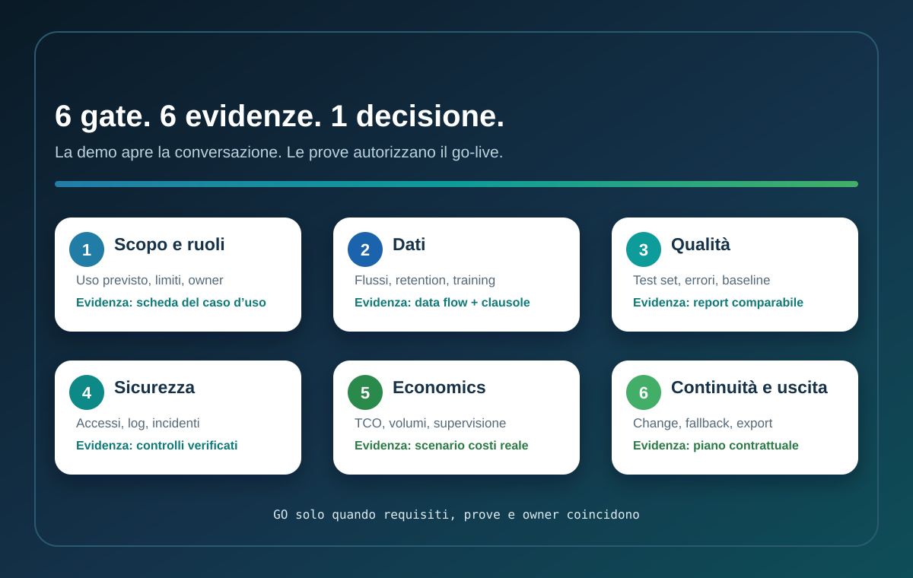

Risposta rapida: cos’è la due diligence di un fornitore AI?
La due diligence di un fornitore AI è una verifica strutturata prima dell’acquisto e del go-live. Serve a capire che cosa fa davvero la soluzione, quali dati usa, come viene misurata, quali rischi trasferisce all’azienda e cosa accade quando il modello cambia o il servizio si interrompe. Per una PMI non richiede mesi di audit: richiede domande precise, prove sul caso d’uso e un contratto coerente con le evidenze raccolte.
Perché la demo non basta
Una demo è costruita per mostrare il percorso ideale. Il lavoro reale contiene documenti incompleti, eccezioni, utenti con permessi diversi, picchi di volume e richieste fuori perimetro. Un sistema può produrre una risposta convincente in riunione e fallire quando deve citare la fonte corretta, rispettare una policy interna o aggiornare il CRM senza duplicare dati.
Il NIST AI Risk Management Framework invita a gestire l’affidabilità lungo progettazione, uso e valutazione dei sistemi. Il profilo NIST per l’AI generativa include anche acquisizione, componenti della catena del valore, test pre-deployment e gestione degli incidenti. In pratica, la selezione è già parte della governance: il rischio non nasce solo dopo la firma.
La Commissione europea descrive inoltre un quadro AI Act basato sul rischio e distingue responsabilità di provider e deployer. Obblighi e documentazione dipendono dal sistema, dall’uso previsto e dal ruolo effettivo dell’azienda. “AI Act compliant” non è quindi una risposta sufficiente: serve capire a quale configurazione e a quale impiego si riferisce.
Il percorso Niuexa in sei gate

Gate 1 — Scopo e responsabilità
Definisci l’unità di lavoro prima del prodotto: input, output, utenti, decisione supportata e azioni consentite. Chiarisci chi è owner del processo e chi risponde dell’output. Se il vendor non sa spiegare uso previsto, limiti e casi esclusi, la valutazione non può proseguire.
Gate 2 — Dati e riservatezza
Mappa quali dati entrano nel sistema, dove transitano, quanto vengono conservati e se possono essere usati per addestramento o miglioramento. Verifica subfornitori, localizzazione, cancellazione, cifratura e separazione tra clienti. Non inserire dati reali nel pilot finché base giuridica, autorizzazioni e configurazione non sono definite.
Gate 3 — Qualità sul caso reale
Prepara un piccolo set rappresentativo con casi normali, eccezioni ed esempi da rifiutare. Stabilisci prima le metriche: completezza, accuratezza rispetto alle fonti, formato, tempo e tasso di escalation. Confronta il risultato con la baseline manuale o con l’alternativa attuale, non con una promessa generica.
Gate 4 — Sicurezza e controllo
Chiedi come vengono gestiti identità, ruoli, log, prompt injection, accessi a strumenti, segregazione degli ambienti e incidenti. L’OWASP AISVS propone requisiti verificabili per ciclo di vita, supply chain, comportamento del modello, memoria, orchestrazione agentica e monitoraggio. Il livello di verifica deve crescere quando il sistema tratta dati sensibili o compie azioni.
Gate 5 — Economics e operatività
Calcola il costo totale: licenze, consumo, integrazione, configurazione, test, revisione umana, monitoraggio, supporto e aggiornamenti. Chiedi come cambiano prezzo e prestazioni con volume e contesto. Il caso economico deve includere anche errori, rilavorazioni e tempo di supervisione.
Gate 6 — Cambiamento, continuità e uscita
I modelli e le API cambiano. Pretendi preavviso per modifiche rilevanti, versioning, possibilità di ritestare, SLA, fallback e piano di gestione incidenti. L’exit plan deve specificare export di dati e configurazioni, cancellazione verificabile, supporto alla migrazione e continuità minima del processo.
Le 12 domande da portare al vendor
| Area | Domanda | Evidenza minima |
|---|---|---|
| Scopo | Qual è l’uso previsto e quali casi sono esclusi? | Scheda funzionale con limiti. |
| Ruoli | Chi è provider, deployer e subfornitore? | Mappa dei ruoli e responsabilità. |
| Dati | I nostri input sono usati per training o miglioramento? | Clausola e configurazione verificabile. |
| Dati | Dove transitano, risiedono e vengono cancellati? | Data flow, retention e lista subprocessori. |
| Qualità | Come misurate prestazioni e limiti sul nostro caso? | Protocollo di test e risultati per scenario. |
| Qualità | Come gestite errori, fonti mancanti ed escalation? | Guardrail, log e percorso di fallback. |
| Sicurezza | Quali controlli proteggono accessi, prompt e strumenti? | Controlli testabili e report di verifica. |
| Incidenti | Come veniamo informati e supportati? | SLA, contatti e procedura di notifica. |
| Cambi | Cosa succede quando modello o policy cambiano? | Versioning, change log e preavviso. |
| Costi | Qual è il TCO a volume realistico? | Scenario costi con assunzioni esplicite. |
| Continuità | Qual è il fallback in caso di outage o degrado? | Piano di continuità testabile. |
| Uscita | Come esportiamo e cancelliamo dati e configurazioni? | Clausola di portabilità e offboarding. |
Come eseguire un pilot comparabile
- Blocca il perimetro: un processo, un gruppo utenti, un set di azioni consentite.
- Crea la baseline: misura tempo, qualità, errori e rilavorazioni del metodo attuale.
- Definisci il test set: includi casi frequenti, edge case e input che il sistema deve rifiutare.
- Scrivi i criteri prima: soglia minima, errori bloccanti e regole di escalation.
- Prova l’operatività: accessi, log, export, supporto e fallback, non soltanto l’output.
- Decidi con un go/no-go: collega ogni requisito a un’evidenza e assegna un owner alle lacune.
Un pilot utile non deve dimostrare che l’AI “funziona”. Deve ridurre l’incertezza su valore, rischio e costo nel contesto dell’azienda.
Red flag che richiedono uno stop
- Risposte vaghe sull’uso dei dati o sull’elenco dei subfornitori.
- Metriche aggregate senza test sul caso d’uso o senza error analysis.
- Impossibilità di ottenere log, export o tracciabilità delle versioni.
- Agenti con permessi ampi e nessun limite per azioni irreversibili.
- Prezzo iniziale chiaro ma costi di consumo, supporto o migrazione non stimabili.
- Clausole che consentono cambi sostanziali senza preavviso o ritest.
- Nessun owner per incidenti, continuità e cancellazione a fine contratto.
Una red flag non implica automaticamente che il prodotto sia inadatto. Implica che l’incertezza deve essere risolta prima di trasferire dati, lavoro o decisioni nel sistema.
Fonti e perimetro
Il framework in sei gate e la checklist sono una guida operativa Niuexa. Sono informati da:
- NIST AI Risk Management Framework, per la gestione volontaria dell’affidabilità lungo il ciclo di vita.
- NIST AI 600-1, Generative AI Profile, su rischi, acquisizione, test e componenti della catena del valore.
- Commissione europea, AI Act, per l’approccio basato sul rischio e i ruoli lungo la catena AI.
- OWASP AISVS, catalogo di requisiti di sicurezza verificabili anche per procurement e vendor evaluation.
La checklist non sostituisce analisi legale, privacy, cybersecurity o procurement sul caso specifico. Il livello di approfondimento deve essere proporzionato a dati, utenti, autonomia e impatto del sistema.
FAQ sulla valutazione dei fornitori AI
Cos’è la due diligence di un fornitore AI?
È la verifica di uso previsto, dati, prestazioni, sicurezza, responsabilità, costi e continuità prima del contratto e del go-live.
Quali documenti devo chiedere?
Flussi dati, limiti d’uso, evidenze di test, controlli di sicurezza, subfornitori, SLA, change log, procedura incidenti ed export.
Una demo è sufficiente?
No. Serve una prova su casi rappresentativi del proprio processo, con criteri definiti prima e confronto con la baseline.
Chi deve partecipare alla valutazione?
Process owner, IT o sicurezza, privacy o legale e procurement, con responsabilità esplicite e proporzionate al rischio.
Quando conviene fermarsi?
Quando dati, limiti, logging, cambi, incidenti o uscita restano non verificabili prima della firma.